Kordak
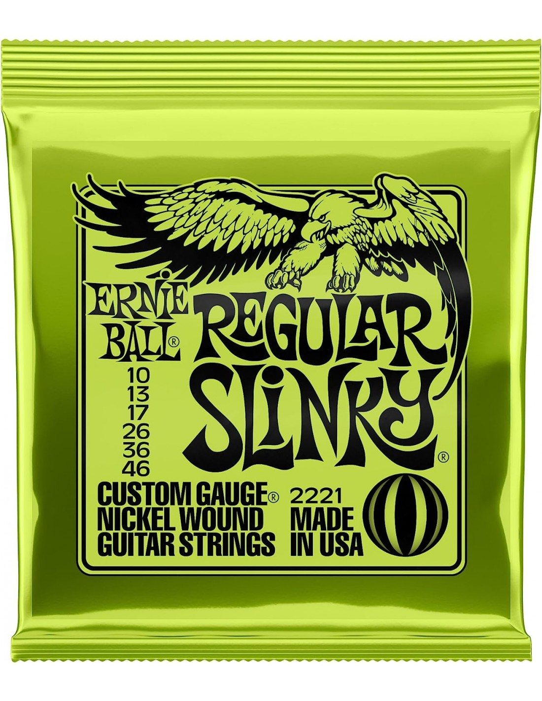
Ernie Ball Regular Slinky
Gitarra elektrikoetarako nikel-estalitako sokak, soinu orekatua, distira bikaina eta jotzeko erosotasun handia eskaintzen dituztenak.
1.099 €
Erosi →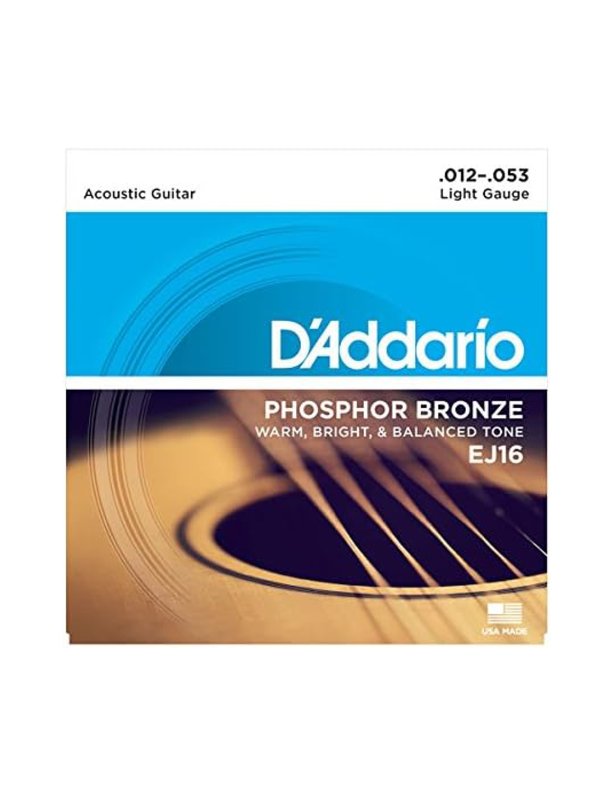
Daddario Phosphor Bronze
Gitarra akustikoetarako brontze fosforozko sokak, soinu beroa eta argia, proiekzio bikaina eta iraupen handia eskaintzen dituztenak.
5.789 €
Erosi →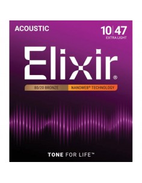
Elixir Nanoweb Acoustic
Estaldura babesgarridun gitarra akustikoko sokak, soinu naturala eta distiratsua mantentzeko eta korrosioaren aurrean erresistentzia handiagoa izateko diseinatuak.
8.045 €
Erosi →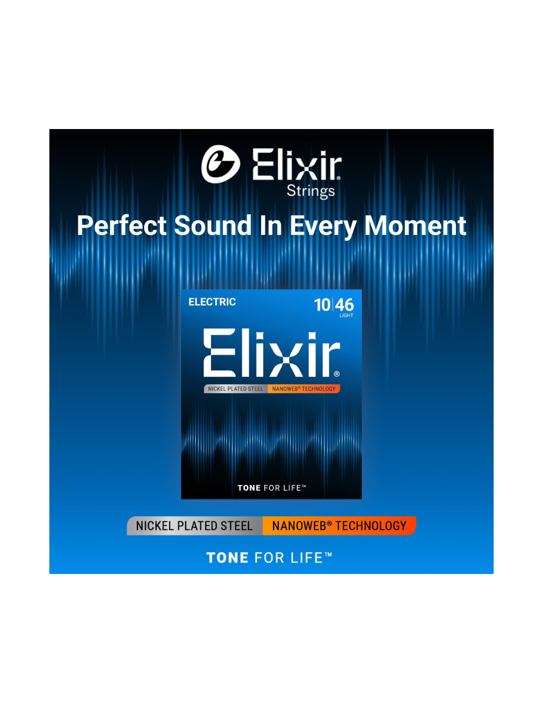
Elixir Nanoweb Electric
Gitarra elektrikorako sokak, NANOWEB estaldurari esker ukitu leuna, soinu garbia eta iraupen luzeko errendimendua eskaintzen dituztenak.
15.690 €
Erosi →Kableak
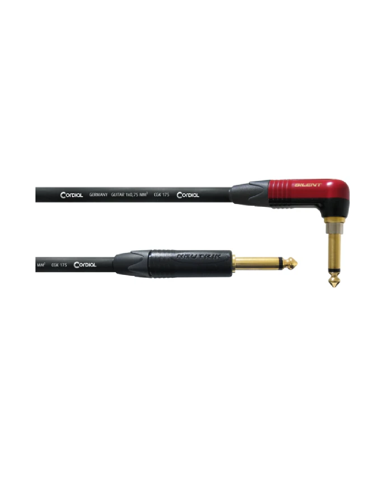
Cordial CSI-3RP Silent
Gitarra eta beste instrumentu elektriko batzuk anplifikagailura konektatzeko kablea, seinale-transmisio fidagarria eta konexio isila eskaintzeko diseinatua.
550 €
Erosi →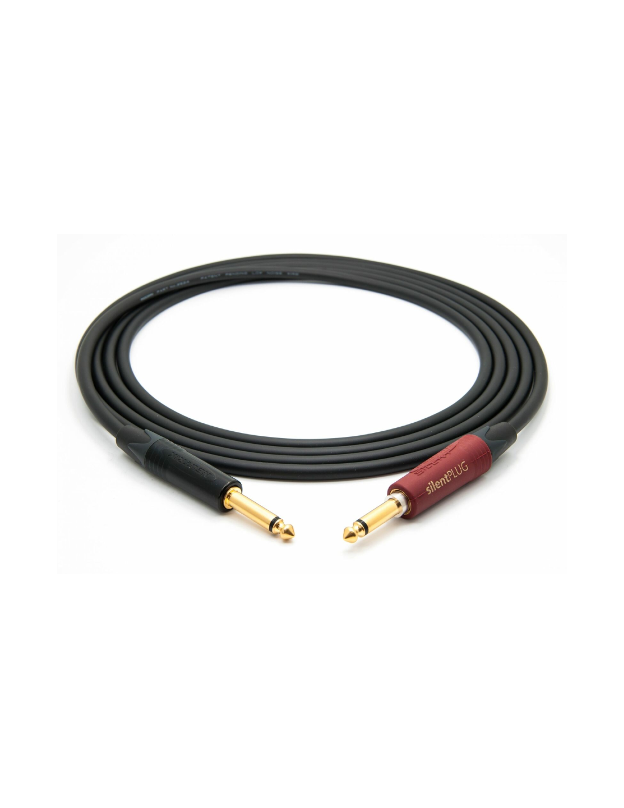
Mogami 2524 Neutrik Jack Silent-Jack 15m
Kalitate handiko audio-kablea, seinale garbia eta interferentzia txikiak eskaintzen dituena. 15 metroko luzerari esker, eszenatokian mugitzeko askatasun handiagoa ematen du.
799 €
Erosi →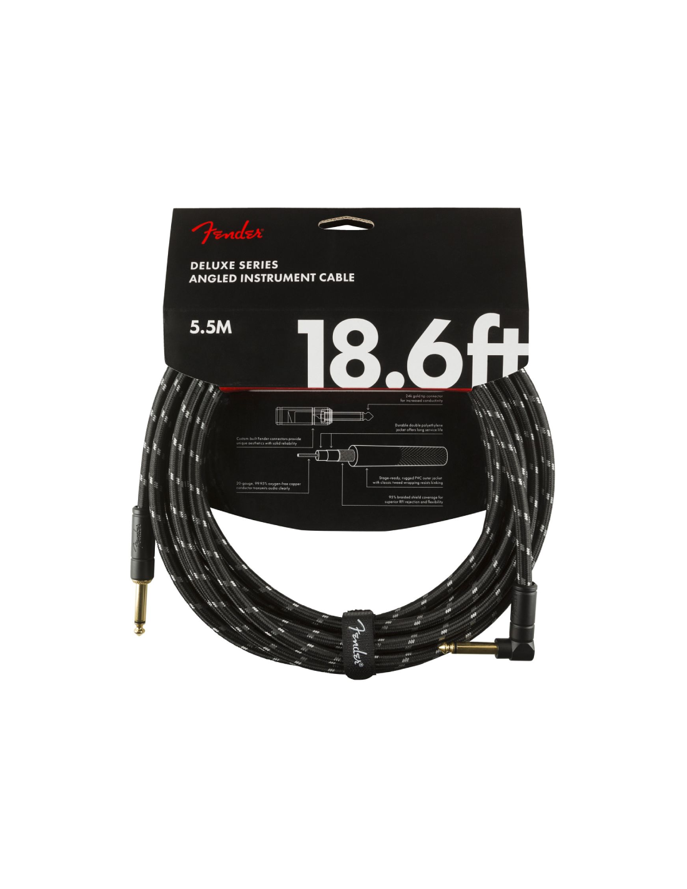
Fender Deluxe Series 5,5M Angled BTweed
Gitarretarako kable sendoa eta malgua, konexio egonkorra eta soinu-transmisio fidagarria eskaintzen dituena. Jack angeludun konektoreak konexioa erosoagoa egiten du.
999 €
Erosi →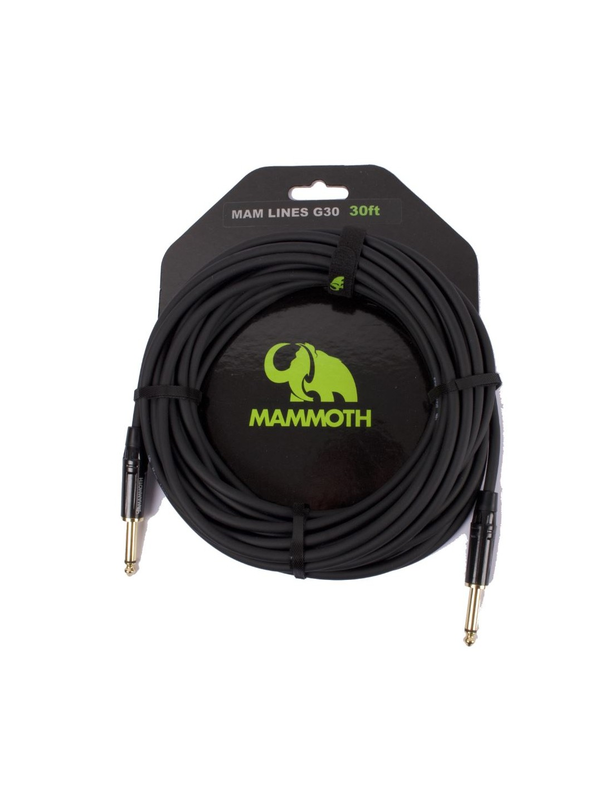
Mammoth Flex G20R Cable Guitarra Jack Codo 6 metros
6 metroko gitarra-kable malgua, jack zuzen eta angeluduneko konexioekin. Eguneroko entseguetarako eta zuzeneko emanaldietarako egokia da.
1.459 €
Erosi →Pedalak
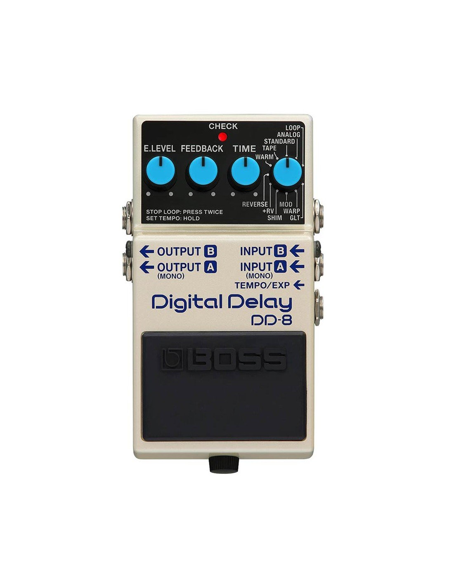
Boss DD-8
Delay digitaleko pedal polifazetikoa, oihartzun zehatzak eta giro-soinu aberatsak sortzeko aukera ematen duena. Estilo musikal askotarako aproposa da.
550 €
Erosi →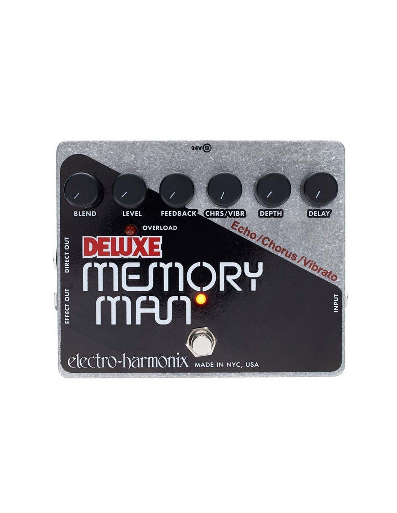
Electro Harmonix Memory Man
Delay analogikoko pedal klasikoa, oihartzun beroak, modulazio aberatsa eta soinuari sakontasuna ematen dioten efektu bereziak eskaintzen dituena.
799 €
Erosi →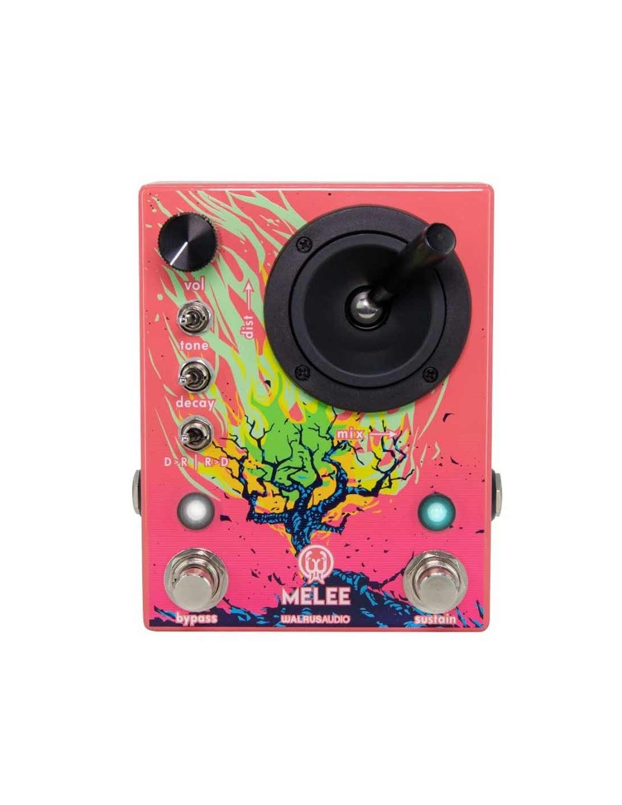
Walrus Audio Melee
Distortsioa eta reverb-a konbinatzen dituen pedal sortzailea, soinu indartsuak eta giro atmosferikoak sortzeko. Rock alternatiborako eta soinu esperimentaletarako aproposa da.
999 €
Erosi →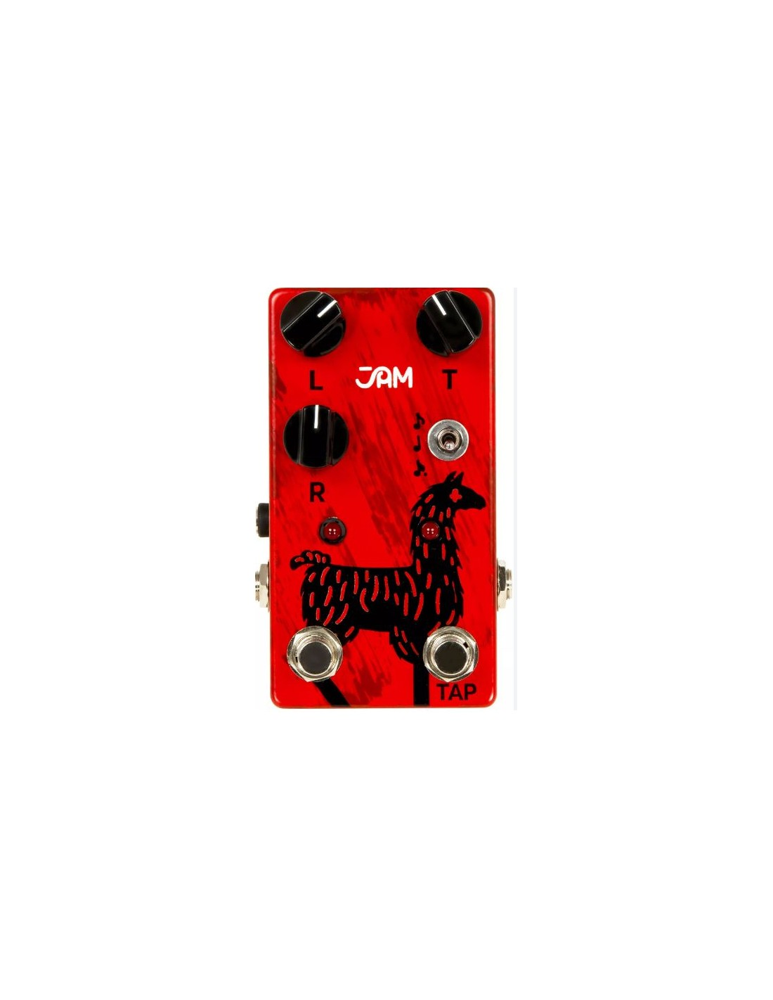
Jam Pedals Delay Llama
Delay analogikoko pedalak oihartzun beroak eta musikalak sortzen ditu, gitarra-soinuari sakontasuna eta izaera vintage-a emanez.
1.459 €
Erosi →